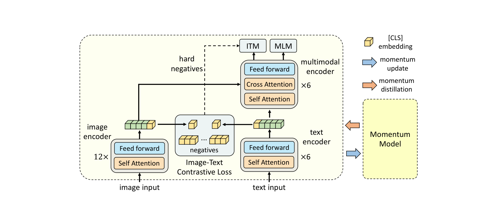
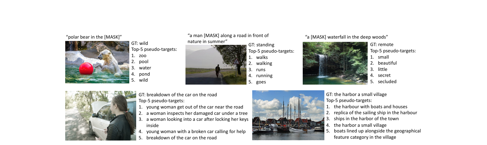
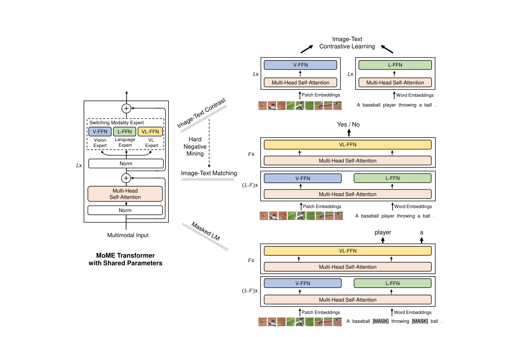
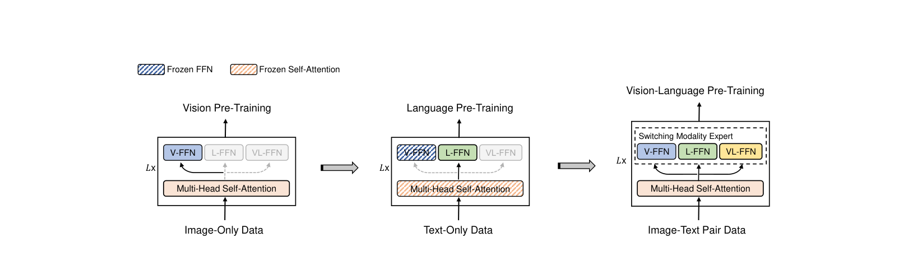

多模态论文串讲·上¶
目录¶
- 核心要点
- 1. 背景回顾：ViLT 与 CLIP
- 2. ALBEF: Align Before Fuse
- 3. VLMo: Unified Vision-Language Pre-training with Mixture-of-Modality-Experts
- 总结与对比
核心要点¶
- 本期视频串讲了多模态学习中仅使用 Transformer Encoder 的四类代表性方法：ViLT、CLIP、ALBEF、VLMo，系统梳理了从"移除目标检测器"到"Align before Fuse"再到"Mixture-of-Modality-Experts"的技术演进脉络。
- ALBEF 的核心贡献是 Align before Fuse（在模态融合前通过 ITC Loss 对齐图像文本特征）和 Momentum Distillation（用动量模型生成伪标签解决 Noisy Web Data 问题），在 4M 训练集上全面超越 CLIP/ALIGN 的 Zero-shot 性能。
- VLMo 提出 Mixture-of-Modality-Experts（MoME）结构，将 FFN 层按模态拆分为 Vision/Language/Vision-Language Expert，Self-Attention 全模态共享权重，使同一模型可灵活切换 Dual-Encoder（检索）与 Fusion Encoder（VQA/VR/VE）模式。
- VLMo 还提出分阶段预训练策略（Vision → Language → Vision-Language），验证了在视觉数据上训练好的 Self-Attention 可直接冻结用于文本建模，无需微调即可有效工作。
- 多模态学习的三大核心训练目标函数为 ITC（Image Text Contrastive）、ITM（Image Text Matching）、MLM（Mask Language Modeling），ALBEF 和 VLMo 均以此为基础进行改进。
1. 背景回顾：ViLT 与 CLIP¶
1.1 ViLT 的动机与局限¶
研究动机： 将预训练目标检测器从视觉端移除。在 Vision Transformer 出现之前，多模态学习普遍依赖预训练的目标检测器抽取视觉特征，存在诸多局限性。
ViLT 的做法： - 发现基于 Patch 的视觉特征与基于 Bounding Box 的特征效果相近 - 用一层 Patch Embedding 替代庞大的预训练目标检测器 - 借鉴 (c) 类方法（OSCAR、ViLBERT、UNITER）的模态融合方式，使用大型 Transformer Encoder 做模态融合 - 模型极其简单：文本 Tokenize + 视觉 Patch Embedding → Transformer Encoder
ViLT 的缺点： 1. 性能不够高：在许多任务上不如 (c) 类方法。原因是 Visual Embedding 为 Random Initialized，而多模态任务需要更强的视觉模型（视觉模型应大于文本模型） 2. 训练时间极慢：虽然推理快，但在标准 4M 数据集上需要 64 张 32G GPU 训练三天，训练复杂度不亚于 (c) 类方法
1.2 CLIP 的优势与不足¶
CLIP 结构： 典型双塔模型，图像和文本各有独立编码器，通过对比学习（ITC Loss）拉近正样本对、推远负样本对。
CLIP 的优势： - 图文匹配/检索任务效果极佳且高效 - 可提前抽取数据库所有特征，新查询只需做点乘（矩阵乘法极快） - 实际应用广泛
CLIP 的不足： - 仅靠简单点乘无法处理复杂任务 - 在 VQA、VR、VE 等任务上性能不够好
1.3 多模态方法的分类总结¶
根据 ViLT 论文图二，多模态方法可分为四类：
| 类别 | 代表方法 | 视觉端 | 模态交互 | 特点 |
|---|---|---|---|---|
| (a) | VSE, VSE++ | 目标检测器（大） | 简单点乘 | 视觉端计算量大，交互浅 |
| (b) | ViLT | Patch Embedding | Transformer Encoder | 结构简单但性能不足、训练慢 |
| (c) | OSCAR, ViLBERT, UNITER | 目标检测器 | Transformer Encoder | 性能好但训练部署困难 |
| (d) | CLIP | 独立编码器 | Cosine Similarity | 检索极强但复杂任务弱 |
理想的多模态模型结构推断： - 图像编码器应比文本编码器更大更强（如更大的 ViT） - 模态融合部分也要尽可能大（不能仅靠点乘） - 不再使用目标检测器，改用 Vision Transformer - 目标函数应为 ITC + ITM + MLM 三者合体
2. ALBEF: Align Before Fuse¶

Figure 1: ALBEF 架构（Align Before Fuse）2.1 基本信息¶
- 全称： Align before Fuse: Vision and Language Representation Learning with Momentum Distillation
- 团队： Salesforce Research（后续产出 BLIP、MUST、ALPro 等系列高质量工作）
- 核心命名来源： Align Before Fuse
2.2 研究动机¶
与 ViLT 不同，ALBEF 移除目标检测器的动机不是速度问题，而是特征对齐问题： - 预训练的目标检测器抽出的视觉特征与文本特征不在同一空间（not aligned） - 目标检测器提前训练好后仅抽特征，未进行 end-to-end 训练 - 两个相隔很远的特征同时输入多模态编码器后，学习图像文本交互信息变得非常 challenging
解决方案： 在多模态 Encoder 之前，通过对比学习 Loss（即 CLIP 的 ITC Loss）将图像和文本特征 Align 起来 → "Align Before Fuse"
2.3 两大核心贡献¶
贡献一：Align Before Fuse¶
- 使用 CLIP 的 Image Text Contrastive (ITC) Loss
- 在模态融合前就对齐图像文本特征
贡献二：Momentum Distillation¶
- 针对 Noisy Web Data 问题提出自训练方法
- 使用 MoCo 的 Momentum Encoder 形式生成 Pseudo Target
Noisy Web Data 问题详解： - 网上爬取的图像文本对中的文本称为 Alt Text（Alternative Text） - Alt Text 具备搜索属性（关键词、hash tag），但不是好的描述性句子 - 例如：不会写"有几个人在山下玩"，而是写具体景点名称、品牌名等关键词 - 有论文将 YFCC 100M 数据集清洗后仅剩 15M（5/6 的数据都是 noisy 的） - 后续 BLIP 也针对此问题设计了 Caption Filtering 模块
2.4 理论分析¶
作者从互信息最大化角度分析，证明 ITC、ITM、Momentum Distillation 的最终作用都是为同一图像文本对生成不同视角（变相的 Data Augmentation），使模型具备 Semantic Preserving 功能。
2.5 模型结构¶
图像编码器¶
- 标准 12 层 Vision Transformer Base
- 输入图片预训练阶段为 256×256（224×224 时 sequence length = 197）
- 特征维度 768
- 初始化参数来自 DEiT（ImageNet-1K 训练）
文本编码器 + 多模态融合编码器¶
- 使用 12 层 BERT Model，劈成两部分：
- 前 6 层：文本编码器（比图像编码器小，符合"视觉模型应更大"的原则）
- 后 6 层：多模态融合编码器（满足"模态融合要尽可能大"的要求）
- 特征维度 768，含 CLS token
- 初始化来自 BERT
Momentum Model¶
- 对应有一份 ViT + BERT 的额外模型参数
- 通过 Exponential Moving Average (EMA) 更新，momentum 参数 = 0.995
- 更新缓慢 → 特征更稳定 → 可做稳定的 negative sample 和 momentum distillation
2.6 三个训练目标函数¶
(1) ITC Loss（Image Text Contrastive）¶
- 图像通过 ViT 取 CLS token 作为全局特征（768×1）
- 文本通过 BERT 前 6 层取 CLS token 作为全局特征（768×1）
- Downsample + Normalization → 256×1
- 负样本存储在 Queue 中（65536 个），由 Momentum Model 产生，无梯度
- 实现完全按照 MoCo，计算 Cross Entropy Loss
- 这就是 Align Before Fuse 的 "Align"
(2) ITM Loss（Image Text Matching）¶
- 给定图片+文本，通过 ALBEF 模型得到融合特征
- 加 FC 分类头判断是否为配对（二分类任务）
- Hard Negative Mining：
- Batch size = 512
- 对 mini batch 中每张图像，计算与同 batch 所有文本的 Cosine Similarity
- 选择除自身外相似度最高的文本作为 Hard Negative
- 使 ITM 任务更具挑战性，避免负样本过于简单导致训练饱和
(3) MLM Loss（Mask Language Modeling）¶
- 将完整句子的部分单词 mask 掉
- 将缺失句子和图片一起通过 ALBEF 模型
- 借助图像信息帮助恢复被 mask 的单词
- 注意： 算 MLM 时输入是原始 i + mask 后的 t，因此每个 iteration 需要做两次 forward（一次原始 i+t，一次原始 i+mask t），这也是多模态训练慢的原因之一
总目标函数： L = L_ITC + L_ITM + L_MLM
2.7 Momentum Distillation 详解¶

Figure 2: ALBEF Momentum Distillation 伪标签示例动机： Noisy Web Data 导致 One-Hot Label 不可靠 - ITC 中：某些"负样本"文本可能比 Ground Truth 更好地描述了图像，一味惩罚会误导学习 - MLM 中：完形填空的空可以填多个词，可能存在比 Ground Truth 更好的选项 - 结论：One-Hot Label 对 ITC 和 MLM 不好
解决方案：Self-Training + Momentum Model - 构建 Momentum Model（EMA），生成 Pseudo Targets（Softmax Score，非 One-Hot） - 让模型预测既接近 Ground Truth，又接近 Momentum Model 的输出
Momentum ITC Loss： - 原始 ITC Loss（基于 One-Hot）权重为 (1-α) - 新增 Pseudo Target Loss（基于 Momentum Model 输出 q，计算 KL Divergence）权重为 α - 最终：L_ITC_momentum = (1-α) × L_ITC_original + α × L_ITC_pseudo
Momentum MLM Loss： - 同理，用 Pseudo Target 替代 Ground Truth - 新增基于自训练的 MLM Loss
为什么 ITM 没有 Momentum 版本？ - ITM 本身基于 Ground Truth 的二分类任务 - ITM 已使用 Hard Negative Mining，与 Momentum Model 有冲突
图 2 示例验证 Pseudo Target 优于 Ground Truth： - MLM 示例：北极熊图片，Ground Truth 为 "in the wild"，Pseudo Target 给出 "in the zoo/pool/water/pond" 更准确描述图片内容 - ITC 示例：Ground Truth "a car broke down on the road" 未描述图片主体人物，Pseudo Target 均提到"年轻女人"+"车"+"树"，描述更全面
最终训练 Loss 共五个： 2 个 ITC + 2 个 MLM + 1 个 ITM
2.8 预训练数据集¶
遵循 UNITER，使用四个数据集（4M Setting）： - Conceptual Captions (CC 3M)：约 300 万 - SBU Captions：约 100 万 - COCO：约 10 万（每图对应 5 个文本） - Visual Genome：约 10 万（每图对应多个文本）
注意事项： 1. CC 和 SBU 仅提供 URL List，随时间推移图片缺失严重（CC 3M 实际只能下到约 2.3M，SBU 约 80 多万） 2. COCO 和 VG 每图对应多个文本，实际图像文本对超过 500 万
14M Setting： 加入 CC 12M，总计约 1400 万，各下游任务性能显著提升
2.9 下游任务¶
| 任务 | 说明 | 评价指标 |
|---|---|---|
| Image-Text Retrieval | 图像↔文本检索（I2T, T2I） | Recall@1/5/10 |
| Visual Entailment (VE) | 判断前提与图像的蕴含/矛盾/中立关系（三分类） | Accuracy |
| VQA | 视觉问答（闭集：3192 个候选答案；开集：文本生成） | Accuracy |
| Visual Reasoning (VR) | 预测文本能否同时描述一对图片（二分类） | Accuracy |
| Visual Grounding | 定位任务（本文涉及较少） | - |
2.10 实验结果¶
消融实验¶
- Baseline： MLM + ITM
- + ITC： 提升巨大（2-3 个点），在所有任务上均显著 → 对比学习依然强大
- + Hard Negative： 约 0.5 的提升，所有任务均有改善
- + Momentum Distillation： 预训练阶段总共约 0.3-0.4 的提升，不如 ITC 和 Hard Negative 显著，但研究方向有价值
Zero-Shot 图文检索（Flickr30K）¶
- ALBEF 仅在 4M 数据上训练，Zero-Shot 结果优于 CLIP/ALIGN 在 400M/1.2B 上的结果
- 注意：ALBEF 的 Zero-Shot 是在 COCO 上 fine-tune 后再测 Flickr，而 CLIP/ALIGN 是直接 Zero-Shot
Fine-Tune 图文检索¶
- 在 Flickr30K 和 COCO 上均优于 ALIGN、UNITER、OSCAR 等 SOTA
- 使用 14M 数据后性能提升更为显著
- Flickr30K R@1 已接近 100，COCO 也非常高 → 领域需要新的更具挑战性的数据集
VQA / VR / VE¶
- ALBEF 4M 已全面超越 OSCAR 和 ViLT
- ALBEF 14M 在三个数据集上性能极强
- 相比 SOTA 绝对提升 2.37%（VQA）和 3.84%（VR）
2.11 ALBEF 总结¶
- 训练速度、推理速度、通用性、性能表现均亮眼
- 及时开源代码，8 卡机训练约 3-4 天
- 是多模态学习领域承上启下的工作
- 后续很多工作基于 ALBEF 开展
3. VLMo: Unified Vision-Language Pre-training with Mixture-of-Modality-Experts¶

Figure 1: VLMo 预训练概览（Mixture-of-Modality-Experts）3.1 基本信息¶

Figure 2: VLMo 分阶段预训练策略- 团队： Microsoft Research（产出 BEiT V1/V2/V3、LayoutLM V1/V2/V3、WAVLM、MetaLM 等系列工作）
- 两大贡献： 模型结构改进（MoME）+ 训练方式改进（分阶段预训练）
3.2 研究动机¶
动机一：统一 Dual-Encoder 与 Fusion Encoder¶
Dual-Encoder（CLIP/ALIGN）： - 优势：检索极高效，可提前抽特征，矩阵乘法飞快，商业价值高 - 劣势：Shallow Interaction（仅 Cosine Similarity），无法处理 VQA/VR/VE 等复杂任务
Fusion Encoder（ALBEF/UNITER）： - 优势：深层模态交互，在 VQA/VR/VE 等任务上效果极好 - 劣势：检索时需对所有可能的图像文本对同时编码，推理极慢，大规模检索不现实
VLMo 的目标： 在同一框架内兼具两种模式的灵活性 - 推理时想做检索 → 当 Dual-Encoder 用 - 推理时想做 VQA/VR/VE → 当 Fusion Encoder 用
动机二：利用单模态大数据集¶
- 多模态训练数据有限（当时仅 4M/14M Setting）
- 单模态数据丰富：视觉有 ImageNet-22K（14M），NLP 有大量文本数据
- 曲线救国：先在单模态大数据上预训练各 Expert，再在多模态数据上 fine-tune
3.3 MoME Transformer 结构¶
标准 Transformer Block： Layer Norm → MSA → Layer Norm → FFN → Residual
MoME Transformer Block 改动： - Layer Norm、MSA、Residual Connection 完全不变 - FFN 层替换为 Switching Modality Expert： - Vision FFN（Vision Expert） - Language FFN（Language Expert） - Vision-Language FFN（Multimodal Expert） - 根据输入模态自动选择对应的 Expert
关键设计：Self-Attention 全模态共享权重 - 不论图像、文本还是图像文本信号，Self-Attention 参数完全相同 - 体现了 Transformer 自注意力操作的极低 Inductive Bias，不挑输入 - 已在多种模态（图像、文本、音频、视频）上验证有效性
3.4 灵活的推理模式¶
Dual-Encoder 模式（用于检索 / ITC Loss）¶
- 图像单独进入 ViT（使用 Vision FFN，12 层）
- 文本单独进入 Language Model（使用 Language FFN，12 层 BERT Base）
- 等价于 CLIP 模型
Fusion Encoder 模式（用于 ITM / MLM / VQA/VR/VE）¶
- 图像和文本一起输入
- 前 L-F 层：视觉和语言信号分别用各自的 Expert
- 最后 F 层：使用 Vision-Language Expert 做模态融合
- Base 模型中 L=10, F=2（最后 2 层做融合）
- Self-Attention 全程共享
3.5 训练目标函数¶
与 ALBEF 完全一致：ITC + ITM + MLM - 借鉴了 ALBEF 的 Hard Negative Mining - 因多次 forward（至少 2-3 次），训练较慢：Base 模型在 4M Setting 下需 64 张 V100 训练两天
3.6 分阶段预训练策略¶
| 阶段 | 数据 | 目标函数 | 冻结策略 |
|---|---|---|---|
| Stage 1: Vision Pre-training | 视觉数据 | Mask Image Modeling (BEiT) | 全部打开训练（Self-Attention + Vision Expert） |
| Stage 2: Language Pre-training | 文本数据 | Mask Language Modeling | Vision Expert 冻结；Self-Attention 冻结（直接用视觉训练好的 SA 处理文本）；Language Expert 打开训练 |
| Stage 3: Vision-Language Pre-training | 多模态数据 | ITC + ITM + MLM | 全部打开（Self-Attention + 三个 Expert 均 fine-tune） |
关键发现： 在视觉数据上训练好的 Self-Attention 可直接冻结用于文本建模，无需微调即可有效完成完形填空任务。反过来（先 Language 再 Vision）效果不佳。这一现象值得深入研究。
3.7 实验结果¶
- VLMo Base 在 4M Setting 下全线高于 ALBEF（2-3 个点的显著提升）
- VLMo Large 进一步提升
- VLMo Large++（1.0B 数据预训练）性能更强
- 在单独的视觉数据集上也取得很好效果
- 图文检索效果和推理时间均优秀
3.8 VLMo 结语与后续发展¶
作者在结语中提出的 Future Work 全部在后续工作中实现：
| Future Work | 对应后续工作 |
|---|---|
| Scale up 模型 | BEiT v3（ViT-Giant, 1.9B 参数） |
| 更多下游 VL 任务（如 Captioning） | VL-BEIT, BEiT v3 |
| Unimodality ↔ Multimodality 互相促进 | BEiT v3（同时刷单模态和多模态数据集） |
| 更多模态（Speech, Video, Structured Knowledge） | WAVLM, LayoutLM V1/V2/V3 |
| General Purpose 多模态学习（文本作 Interface） | MetaLM |
BEiT 系列发展历程： - 2021.06: BEiT V1（视觉 Mask Modeling） - 2021.11: VLMo（MoME + 分阶段预训练） - 2022.06: VL-BEIT（Vision-Language Mask Modeling） - 2022.08: BEiT V2（BEiT V1 升级版，仍为视觉） - 2022.08: BEiT V3（集大成版，多模态 + 单模态）
总结与对比¶
四篇方法对比¶
| 维度 | ViLT | CLIP | ALBEF | VLMo |
|---|---|---|---|---|
| 视觉编码器 | Patch Embedding | ViT | 12-layer ViT | 12-layer ViT (Vision Expert) |
| 文本编码器 | Tokenizer | BERT/GPT | BERT 前6层 | BERT (Language Expert) |
| 模态融合 | Transformer Encoder | 无（点乘） | BERT 后6层 | MoME 最后F层 (VL Expert) |
| 训练Loss | WPA + MLM + ITM | ITC | ITC + ITM + MLM + Momentum | ITC + ITM + MLM |
| 检索效率 | 低 | 极高 | 中等 | 高（可切换Dual-Encoder） |
| VQA/VR/VE | 一般 | 差 | 好 | 更好 |
| 训练速度 | 慢 | 快 | 较快（8卡3-4天） | 较慢（64卡2天） |
| 核心创新 | 移除目标检测器 | 大规模对比学习 | Align Before Fuse + Momentum Distillation | MoME + 分阶段预训练 |
关键技术洞察¶
- 视觉模型应大于文本模型：多模态任务中视觉能力是瓶颈，这一原则贯穿 ALBEF 和 VLMo 的设计
- 模态融合不可或缺：仅靠点乘无法处理复杂任务，深层融合（Transformer Encoder）是必须的
- ITC Loss 是最有效的训练信号：消融实验显示 ITC 带来 2-3 个点的巨大提升
- Noisy Data 是多模态学习的核心挑战：ALBEF 用 Momentum Distillation，BLIP 用 Caption Filtering，数据清洗可将 100M 筛至 15M
- Transformer Self-Attention 具有跨模态通用性：VLMo 验证了视觉训练好的 SA 可直接用于文本，无需微调
- 研究是逐步积累的：微软团队从 BEiT V1 → VLMo → VL-BEIT → BEiT V2 → BEiT V3，一步步迭代出集大成工作